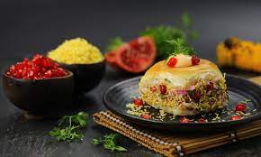
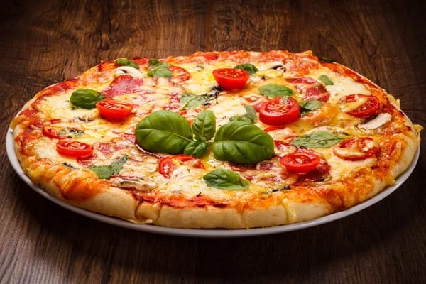

You'll also love ♥

Dabeli

Chicken Biryani

Wash the chicken
To make this easy Kolhapuri chicken recipe, begin with washing the
chicken in running water.
Dry roast poppy seeds, sesame seeds & coconut
In the meantime take another pan and heat it on medium flame. Then dry
roast the sesame seeds and poppy seeds together and keep aside. Then dry
roast the coconut and keep aside.
Marinate the chicken pieces
Now, mix 1 1/2 teaspoon of ginger and garlic paste along with turmeric
powder and salt in a large bowl. Now add the chicken pieces and rub well
until the pieces are evenly coated. Keep aside for about 45 to 60
minutes so that the chicken pieces are well-marinated.
Stir fry onions with prepare onion-seeds paste
Then take a chopping board and finely chop the onions and fry half of
them until they turn golden brown. Remove from the flame, and mix the
onions with roasted coconut, sesame seeds and poppy seeds. Grind into a
fine paste.
Saute remaining onions, ginger-garlic paste & spices
Heat oil in a heavy-bottomed pan. Add the remaining onions and saute for
another 30 to 45 seconds. Add the remaining ginger and garlic paste, and
saute until onions turn golden brown. Then add the red chilli powder,
tomatoes and cook for 2 to 3 minutes.
Add the marinated chicken, onion-seeds paste & cook on low flame
Add the marinated chicken pieces and cook for a minute more. Then add
the ground paste, salt and some water. Mix well and bring it to a boil.
Add the garam masala powder, coriander leaves and cover the pan with a
lid. Reduce the flame and cook for about 15 to 25 minutes or until the
chicken is fully cooked. Serve the Kolhapuri chicken with rice, roomali
roti or naan.
| 207 | 10g | 26g | 4g |
|---|---|---|---|
| Calories | Fat | Carbs | Protein |